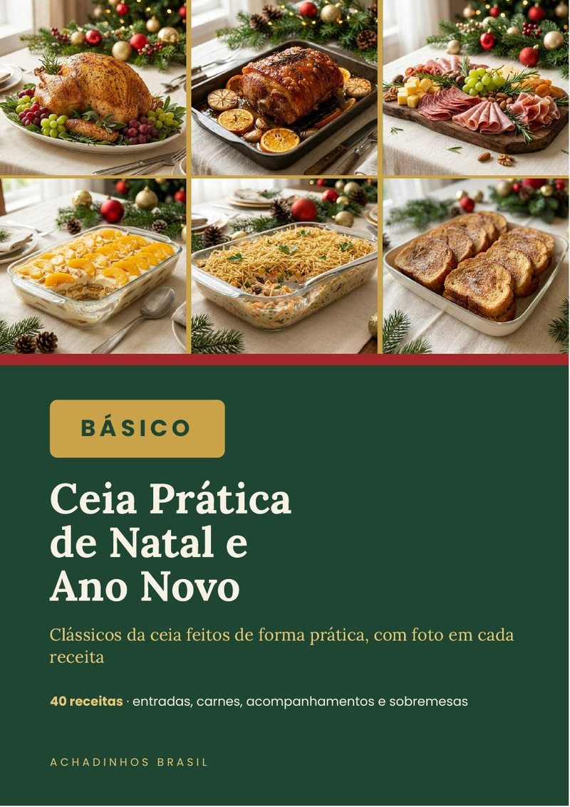
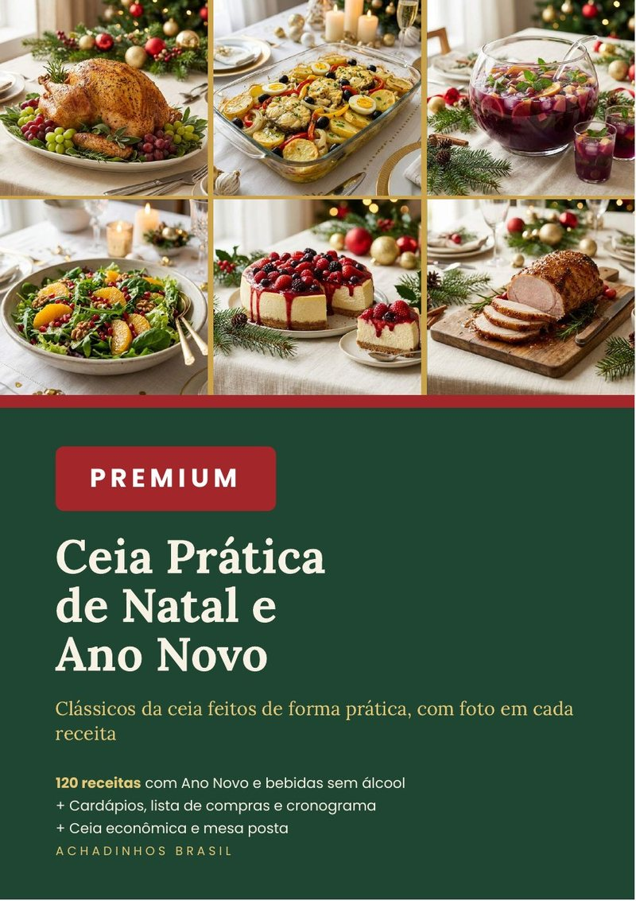
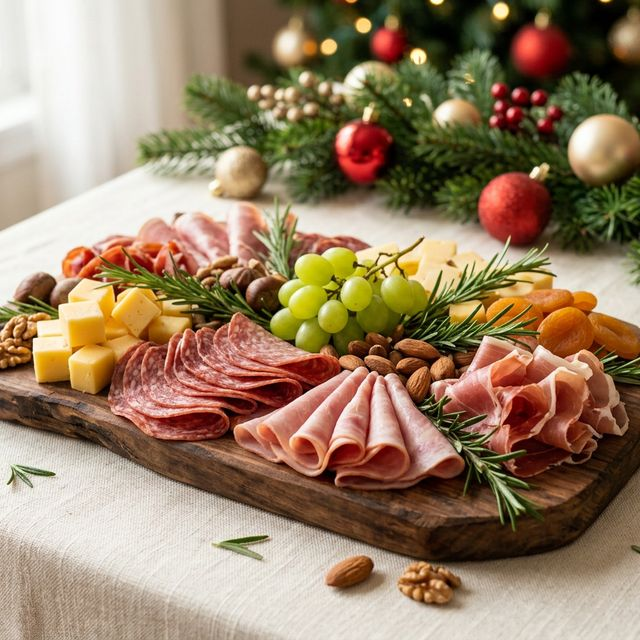
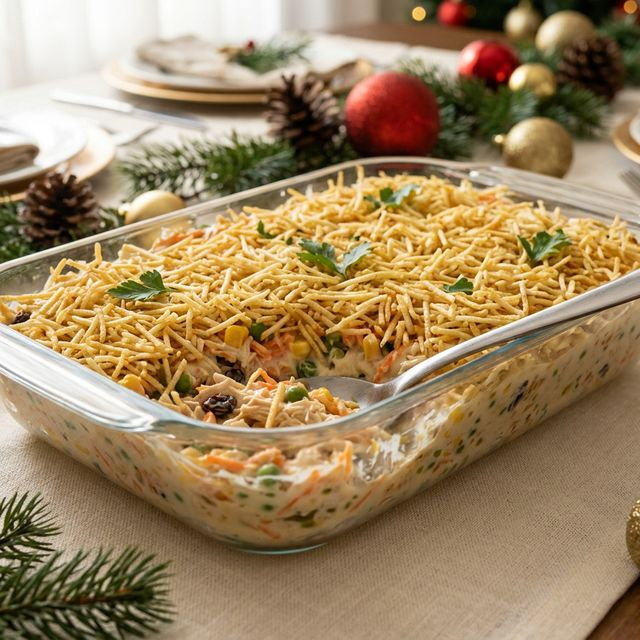
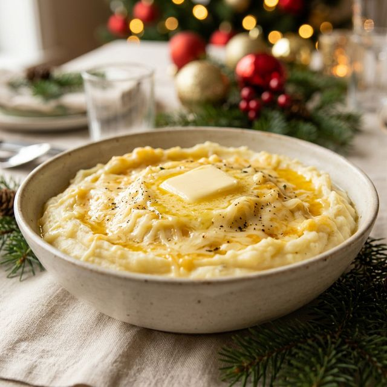
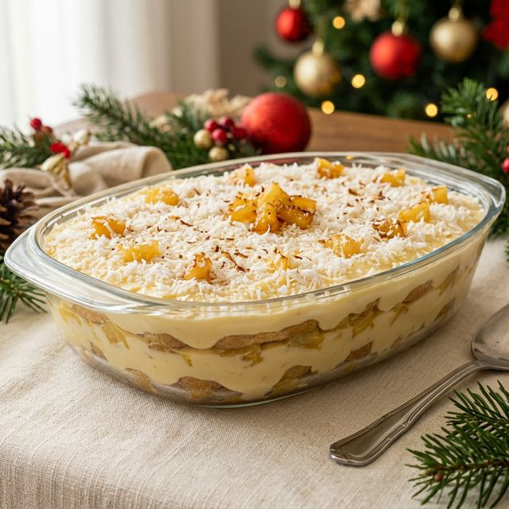
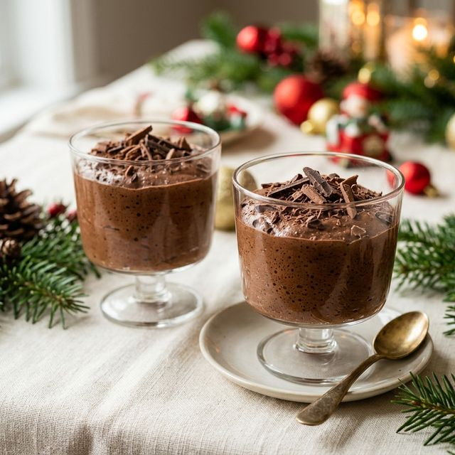
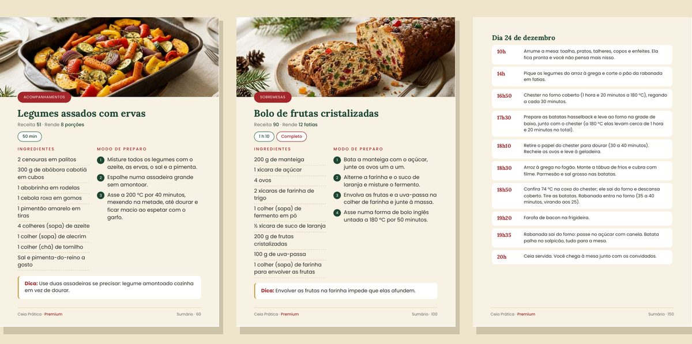

40, 80 ou 120 receitas com foto, cardápio por número de convidados, lista de compras e cronograma. Escolha o seu abaixo.
Ver as 3 opçõesSem mensalidade. Você recebe o PDF na hora e usa no celular ou imprime.


Toque em qualquer uma e veja completa: ingredientes, modo de preparo e a dica.

Rende 8 porções

Rende 10 porções

Rende 8 porções

Rende 12 porções

Rende 8 porções
Rende 10 porções

Logo depois do pagamento chega no seu e-mail o acesso à área de membros, onde você baixa o PDF. No Pix, libera na hora.
O Básico tem 40 receitas. O Completo tem 80 receitas, cardápio por número de convidados (4, 8 e 12), lista de compras e cronograma de 23 e 24/12. O Premium tem 120 receitas com Ano Novo, tudo do Completo, mais ceia econômica, bebidas sem álcool e guia da mesa posta.
Abre. É um PDF comum: dá para ler no celular, no tablet, no computador ou imprimir.
Não. As receitas usam ingredientes de supermercado comum.
Não. É pagamento único.
Você tem 7 dias de garantia. Pede o reembolso e devolvemos o valor inteiro.